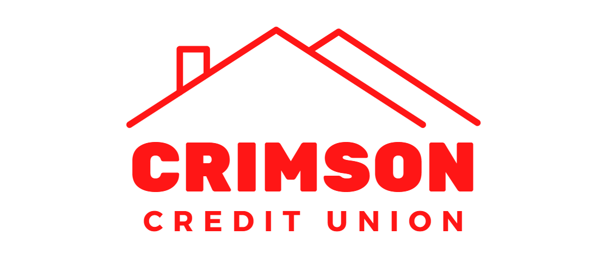
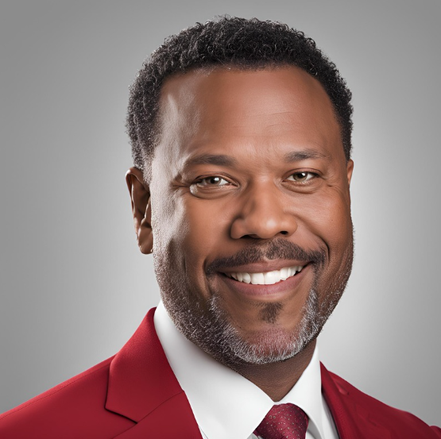

At Crimson Credit Union, our Board of Directors is composed of dedicated members who work diligently to ensure the credit union’s mission of serving our community and providing excellent financial services. The Board is elected by our members, and each member brings a unique set of skills and experiences to guide us towards continued growth and success.
The Board of Directors is responsible for overseeing the strategic direction of Crimson Credit Union, ensuring we maintain financial stability, and upholding the values of transparency, fairness, and member-first service. They work closely with our management team to ensure that we remain a trusted financial partner for all our members.

John has been a dedicated member of the credit union for over 20 years and has served as Chairman of the Board for the past 5 years. With his background in finance and community development, Jeffrey ensures that Crimson Credit Union continues to grow in a sustainable and member-focused way.
John brings over 15 years of experience in corporate governance and strategic planning. As COO, he plays an integral role in overseeing the credit union's policies and fostering a positive and transparent relationship with our members.
Susan's expertise in accounting and financial management has been invaluable to our board. As CFO, she ensures the credit union maintains fiscal responsibility while providing excellent financial services to our members.
Henry has been with the credit union for 10 years, serving in various technical roles, and currently holds the position of CTO. He is responsible for ensuring our credit union's technical resources run smoothly.
Aadrika brings a wealth of experience in cyber security and team leadership. As our CSO, she is dedicated to ensuring that our credit union remains actively prepared to combat threats to our technological systems, making your money safe.
The Board of Directors is committed to maintaining the values that Ray Jackson, our founder, instilled in the credit union. Together, we are working to ensure that Crimson Credit Union continues to thrive and provide exceptional service to all of our members.